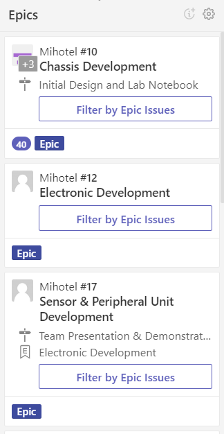
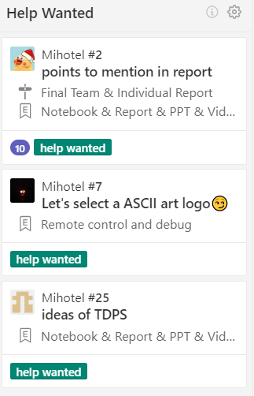
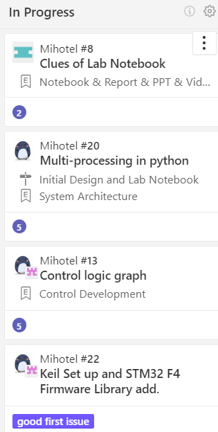
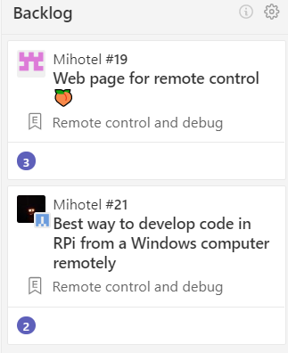
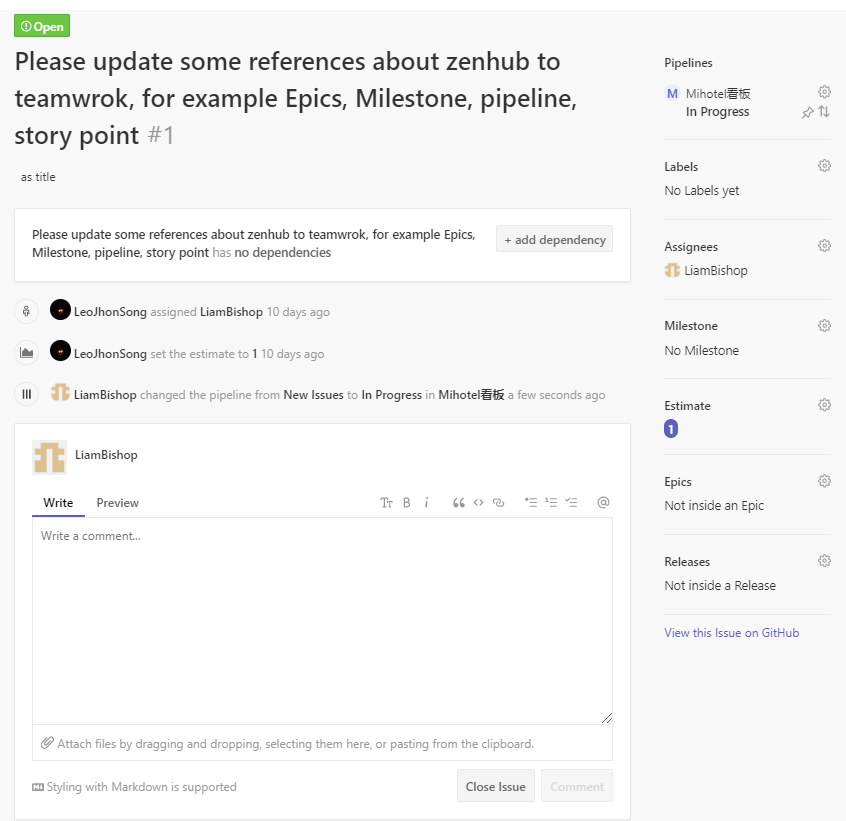
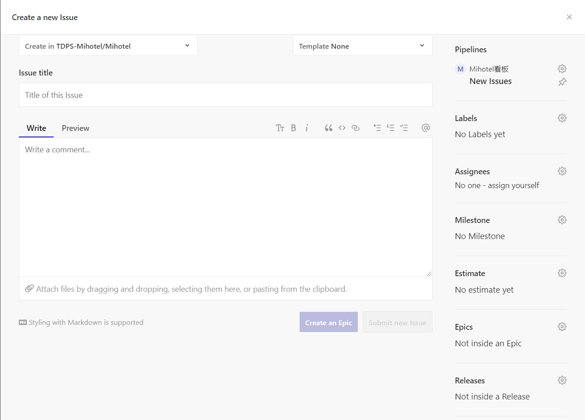
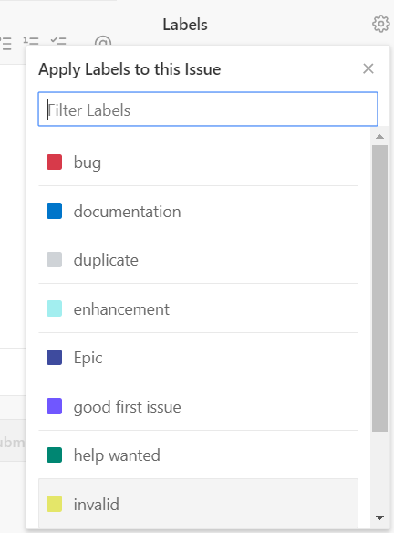
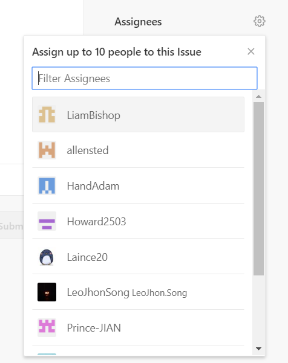

Tutorial on using Zenhub
Video tutorial on Zenhub
In order to provide our team members with direct impression on Zenhub and have a better experience on using Zenhub, I made a video to intrduce how to use Zenhub and uloaded onto the Internet. The network link is put below: https://b23.tv/SxSUNU
PipeLines
- ZenHub Pipelines are built using GitHub repositories. When a Pipeline is created, each "card" on the Board represents a GitHub Issue or Pull Request.
- Move the cursor onto the Pipeline and slide the mouse wheel to look through the tasks.
- The level four subtitle below are all introducing different pipelines.
❗️The relationship between Pipeline and card is: each card represents an issue; Pipelines consist of cards.
New Issues
This pipeline is created for Newly created Issues which requires to be done.

Epics
ZenHub Epics bundle similar groups of Issues together, providing a visual progress bar of work across related or dependent Issues. This panel can be regarded as a group panel, each group will have their own Epic panel containing their design tasks.

Help Wanted
The function of this pipeline is exactly what it looks like. This pipeline contains the problems which requires suggestions or solution from each member of Team Mihotel.

In progress
This pipeline shows what the team is currently working on.

Back Log
- This pipeline contains the issues which is needed to be completed before the end of the project but not the highest priority at present, or it is nt able to be done without enough accumulation.

Closed
In the detailed issue page, there is a Close Issue bind as shown in the figure below. The users are not supposed to move the completed issue card directly to the Closed pipeline. In stead, the users are supposed to close the issue inside the detailed page of the completed issue.


Detailed card operations
Establish new issues
This is the most basic and simple step to start our project management.
- New issues can be created by simply clicking on the green bond New Issue in the following picture.

⚠️Generally, team members are supposed to establish issues in Github. Zenhub is just a tool to help us have an eye on our project progress.
Card setting up
This part is one of the most important step to do the project management which is related to the division of team members and the project progress. Therefore, in order to develope the project systematically and finish the project on time, it is necessary to learn how to set up the card.
- The following figure is the card setting up page, which will appear automatically as soon as the users click on New Issues bond.

How to import the content of the issue into the card

As we can see here, the left part of the setting up page is the region for the content of the issue, including Issue Title, Comment, Overview and File Attaching.
- Issue Title
It is obvious that this region is for issue title.
- Writing a comment & Attaching files
This region is used for describing the detailed content of the issue, including Issue content, Division of group members and The files which are probably needed to solve the issue.
- Preview
This region is used for previewing what the card is about to look like so that necessary adjustments can be done before pulling the card to the pipeline.
Setting of Labels
Issues can be divided into several categories as shown below. While setting the new issue, remind that do not forget to mark the issue with labels so that the team members are able to figure out what exactly category this issue belongs to. This can improve our efficiency.

How to evolve the group members into the issue.
This step is somehow similar to dividing tasks to group members. It can be simply achieved to evolve the group members rather than the whole group who are in charge of solving this issue by clicking the bond Asignees showed below.

How to evolve an issue into Epic.
This step is to classify different issues. As we have mentioned before, Epic is used to store similar or related issues. It is a good habit to classify the issues at the stage of developing an new issue. The newly established issues can be put into a proper Epic by clicking Epics bond shown below.

After Clicking Epics bond, the existing Epics will be shown immediately. Simply click the related Epic so that the new issue will be put into this Epic.
How to set the emergency level.
- Setting of High Priority
At the right part of the setting up page, there is a pin shape bond, on the top, which represents Setting this issue as a high priority issue. The detailed bond is shown in the following picture.
- Except for High Priority, Issues can be moved freely in the pipeline So that the level of emergency can be simply set by moving issues freely in the pipeline.